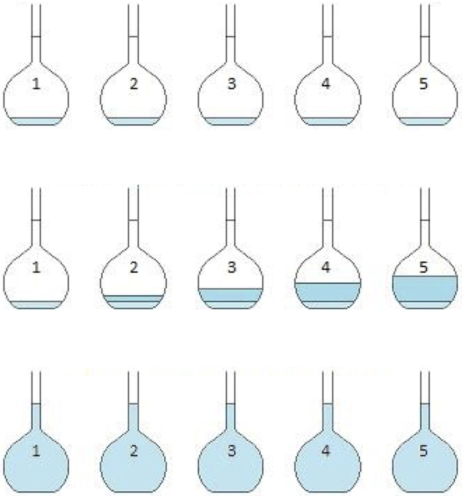
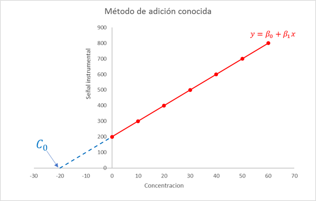
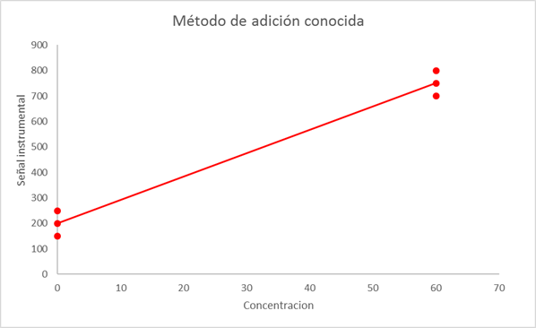
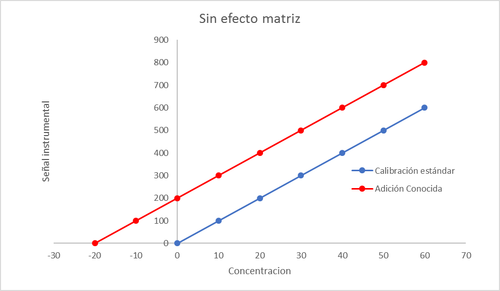
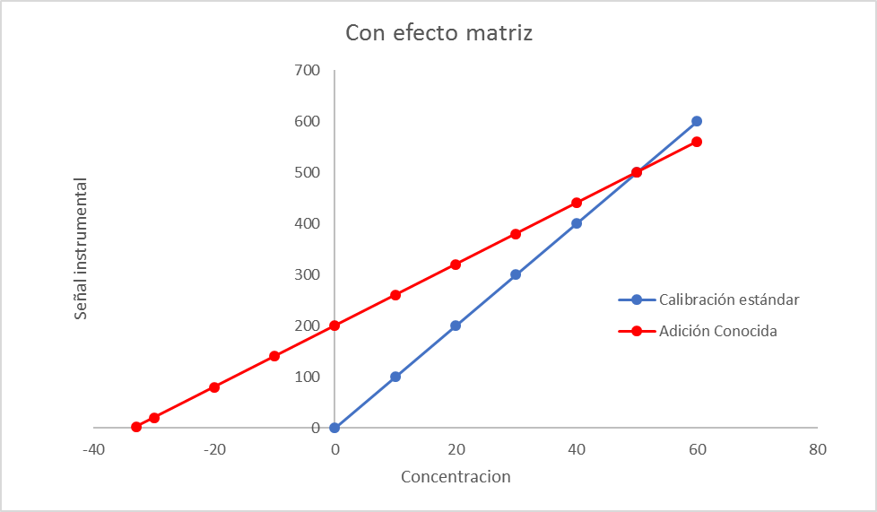
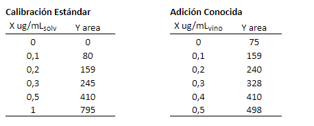
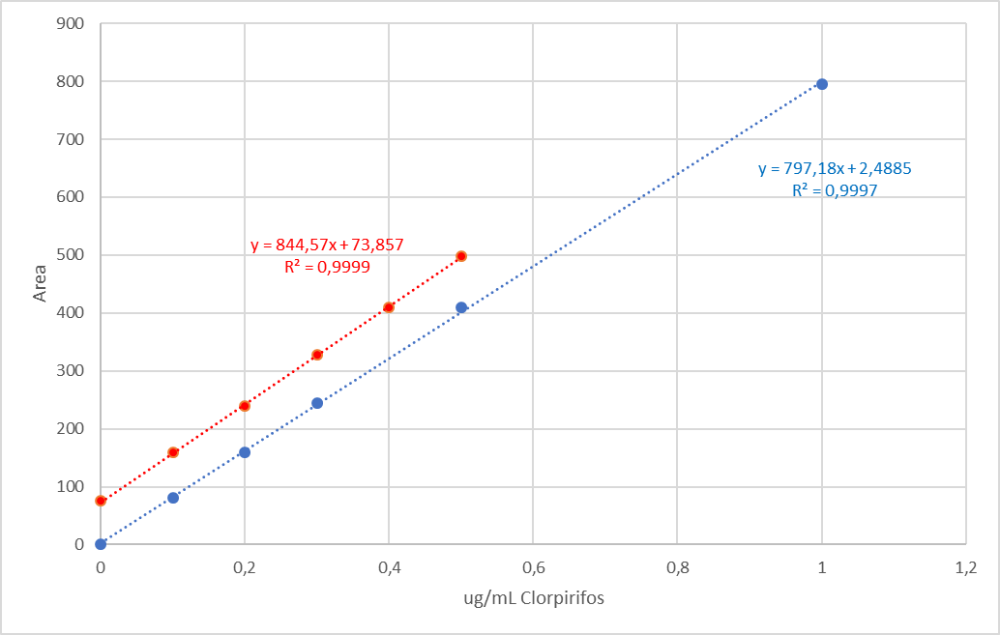

¿Cómo detectar el efecto matriz en un método analítico?
He vuelto a postear, después de una gira que me llevó por los cinco… mentira, fue por pura pega.
El famoso efecto matriz, algo tan etéreo como el criterio analítico. El efecto matriz está íntimamente relacionado con las interferencias de la matriz que de alguna forma aumentan o disminuyen la señal instrumental que, en teoría, es producida sólo por el analito de interés.
Para evaluar y detectar el efecto matriz, debemos desempolvar algunos papers que nos enseñaron el famoso método de calibración con adición conocida o adición de estándar. En este método, la matriz es nuestro medio de calibración. En vez de preparar los calibrantes en solventes puros o en solución ácida, utilizaremos la misma matriz para preparar (adicionar) el analito. De esta forma, la señal analítica de estos calibrantes, está compuesta de la señal propia del analito así como también de los interferentes, lo que permite corregir/minimizar sus efectos.
Existen varias formas de implementar el método de adición conocida. Una muy buena referencia es el excelente y pedagógico paper de M. Bader:
Morris Bader “A systematic approach to standard addition methods in instrumental analysis” J. Chem. Educ., 1980, 57 (10), p 703
El método consiste en añadir cantidades conocidas del analito en solvente puro o solución ácida a volúmenes iguales de matriz. Finalmente, medir la respuesta instrumental en una serie de adiciones crecientes tal como lo muestra la figura 1:
Es necesario que las adiciones de analito generen, en conjunto con la cantidad de analito presente en la muestra original, una concentración tal que aún se encuentre en el rango lineal de calibración. De esta forma se otiene una curva tal como se observa en la figura 2:

Las unidades del eje \(X\) pueden establecerse como analito añadido o, tal como lo propone Bader en su paper, como múltiplos de un volumen o cantidad fija del analito. Por lo tanto, en \(x = 0\) se obtiene la señal de la muestra problema a la cual no se le ha agregado el analito, es decir, la señal original. En cada una de las adiciones del estándar mediremos la señal instrumental de tal manera de obtener, y así lo esperamos, una relación lineal entre analito agregado \(x\) y señal \(y\) de la forma:
\[\begin{equation} y = \beta_{0} + \beta_{1}x + \epsilon (\#eq:calib) \end{equation}\]
donde se asumen los mismos supuestos que discutimos en el caso de la calibración lineal estándar(en solvente puro) y que puede recordar en este post.
La concentración de la muestra problema \(C_{0}\) se obtiene a partir de la ecuación 1:
\[ C_{0} = \frac{\beta_{0}}{\beta_{1}} \tag{1}\]
La incertidumbre de la concentración de la muestra problema \(u(C_{0})\) se calcula a partir de la ecuación:
\[ u(C_{0}) = \frac{\sigma_{y/x}}{\beta_{1}} \sqrt{\frac{1}{n} + \frac{\overline{y}^2} {\beta_{1}\sum_{i}^{n} (x_{i} - \overline{x})^2}} \tag{2}\]
donde:
- \(\sigma_{y/x}\) es la desviación estándar del error aleatorio \(\epsilon\)
- \(n\) es el número de adiciones independientes del estándar
- \(\overline{y}\) es el promedio de las señales instrumentales de las adiciones
- \(\overline{x}\) es el promedio de las concentraciones
Como puede apreciar, la expresión de la incertidumbre de calibración para el método de adición conocida es muy similar a la correspondiente calibración estandar que discutimos en un post anterior.
Si queremos minimizar esta incertidumbre podríamos aumentar el número de adiciones \(n\) o aumentar el término \(\sum_{i}^{n} (x_{i} - \overline{x})^2\). Este último término es interesante, pues nos dice que la incertidumbre de calibración de este método se minimiza utilizando un rango amplio de concentración de adición. Ellison demuestra que, dado que la propiedad de linealidad se mantiene, basta preparar dos puntos de calibración:
- La muestra original sin adición (\(x = 0\))
- El extremo superior del rango lineal
Por ejemplo, si por alguna razón se tuvieran que preparar \(n = 6\) adiciones, lo que indica la ecuación 2, es que sería mejor preparar tres puntos sin adición (\(x = 0\)) y tres en el extremos superior del rango lineal, tal como lo demuestra la figura 3

Para evaluar estadísticamente si existe un efecto matriz debemos comparar la curva de calibración estándar (es decir, en solvente orgánico o en solución ácida) con la curva de adición conocida. Si las pendientes de ambas curvas son “iguales” podemos afirmar que no hay evidencia de efecto matriz tal como se muestra en la figura 4. De modo contrario, si las pendientes de ambas curvas difieren, entonces, existe un efecto matriz significativo, tal como lo indica la figura 5:


Ahora, Ud. se preguntará ¿Cuál es la herramienta estadística para comparar dos pendientes de curvas de calibración?
¡Excelente pregunta Tu(x3)!
Aunque hay varias aproximaciones para hacer esta comparación, en este post utilizaremos el Análisis de Covarianza (ANCOVA) y lo implementaremos, como no, en lenguaje R. La siguiente tabla muestra los datos de calibración de clorpirifos en vino por GC-NPD, tanto en solvente puro como mediante el método de adición conocida en la muestra de vino:

Note que en la caso de la calibración estándar, las unidades de concentración están expresadas como \(\mu\)g de clorpirifos por mL de solvente. En cambio, en los datos de adición conocida están expresadas como \(\mu\)g de clorpirifos añadidos en los mL de muestra original. Por lo tanto, \(X = 0\, \mu\text{g}/\text{mL}_{\text{vino}}\) representa la muestra sin adición. La figura 6 muestra las curvas de calibración correspondientes.

Apliquemos, ahora, el análisis de covarianza para evaluar si existen diferencias significativas entre las pendientes.
Primero, ajustemos un modelo lineal para cada calibración:
# Curva de calibración estándar
x <- c(0, 0.1, 0.2, 0.3, 0.5, 1.0)
y <- c(0, 80, 159, 245, 410, 795)
fit.std <- lm(y ~ x)
# Curva de adición conocida
x.add <- c(0, 0.1, 0.2, 0.3, 0.4, 0.5)
y.add <- c(75, 159, 240, 328, 410, 498)
fit.add <- lm(y.add ~ x.add)
# En R la expresión y ~ x significa 'y es modelado por x'A continuación se muestran los análisis estadísticos para cada curva:
summary(fit.std)
Call:
lm(formula = y ~ x)
Residuals:
1 2 3 4 5 6
-2.489 -2.206 -2.924 3.359 8.924 -4.664
Coefficients:
Estimate Std. Error t value Pr(>|t|)
(Intercept) 2.489 3.420 0.728 0.507
x 797.176 7.105 112.193 3.78e-08 ***
---
Signif. codes: 0 '***' 0.001 '**' 0.01 '*' 0.05 '.' 0.1 ' ' 1
Residual standard error: 5.751 on 4 degrees of freedom
Multiple R-squared: 0.9997, Adjusted R-squared: 0.9996
F-statistic: 1.259e+04 on 1 and 4 DF, p-value: 3.785e-08summary(fit.add)
Call:
lm(formula = y.add ~ x.add)
Residuals:
1 2 3 4 5 6
1.1429 0.6857 -2.7714 0.7714 -1.6857 1.8571
Coefficients:
Estimate Std. Error t value Pr(>|t|)
(Intercept) 73.857 1.463 50.49 9.21e-07 ***
x.add 844.571 4.832 174.79 6.43e-09 ***
---
Signif. codes: 0 '***' 0.001 '**' 0.01 '*' 0.05 '.' 0.1 ' ' 1
Residual standard error: 2.021 on 4 degrees of freedom
Multiple R-squared: 0.9999, Adjusted R-squared: 0.9998
F-statistic: 3.055e+04 on 1 and 4 DF, p-value: 6.426e-09La pendiente de la curva de calibración estándar es 797 y la pendiente del método de adición es 845. ¿Es esta diferencia significativa? Esta es la pregunta que responde el ANCOVA. Para implementar este test en Rdebemos hacer una pequeña modificación a nuestra base de datos:
# Consolidaremos los datos de calibración en una sola tabla llamada 'datos'
datos <- data.frame(X = c(x, x.add),
Y = c(y, y.add),
Calibracion = c(rep('Estandar', 6), rep('Adicion', 6)))| X | Y | Calibracion |
|---|---|---|
| 0.0 | 0 | Estandar |
| 0.1 | 80 | Estandar |
| 0.2 | 159 | Estandar |
| 0.3 | 245 | Estandar |
| 0.5 | 410 | Estandar |
| 1.0 | 795 | Estandar |
| 0.0 | 75 | Adicion |
| 0.1 | 159 | Adicion |
| 0.2 | 240 | Adicion |
| 0.3 | 328 | Adicion |
| 0.4 | 410 | Adicion |
| 0.5 | 498 | Adicion |
Una vez consolidados los datos en una única tabla podemos aplicar el análisis de covarianza en R con los siguientes comandos de la librería car:
library(car)
# Ajustamos un modelo con interceptos distintos y una pendiente para cada
# calibración
fit <- lm(Y ~ X + Calibracion + X:Calibracion, data = datos)
Anova(fit, type = 'II')Anova Table (Type II tests)
Response: Y
Sum Sq Df F value Pr(>F)
X 540763 1 29108.930 1.558e-15 ***
Calibracion 20535 1 1105.398 7.309e-10 ***
X:Calibracion 310 1 16.699 0.003503 **
Residuals 149 8
---
Signif. codes: 0 '***' 0.001 '**' 0.01 '*' 0.05 '.' 0.1 ' ' 1De la tabla se observa que el p-value de la comparación de las pendientes es \(Pr(>F) = 0.0035\) el cual es menor a 0.05 (X:Calibracion), por lo tanto, la diferencia observada entre las pendientes es, desde el punto de vista estadístico, significativa. Esto implica que existe un efecto matriz que no está corregido por la calibración en solvente. En definitiva, para este tipo de muestra, sería apropiado utilizar el método de adición conocida para la determinación de clorpirifos en vino.
Ahora, esta conclusión debe ser complementada con el criterio químico y metrológico. Recuerde que la desventaja del método de adición conocida es que es necesario hacer la adición muestra a muestra. Lo que se concluye del ANCOVA está basado en un criterio puramente estadístico.
Bueno estimado lector, espero haya disfrutado este post.
Espero sus comentarios. Nos vemos.
Bibliografía
Ellison SL, Thompson M. Standard additions: myth and reality (2008) Analyst 133(8):992-7.